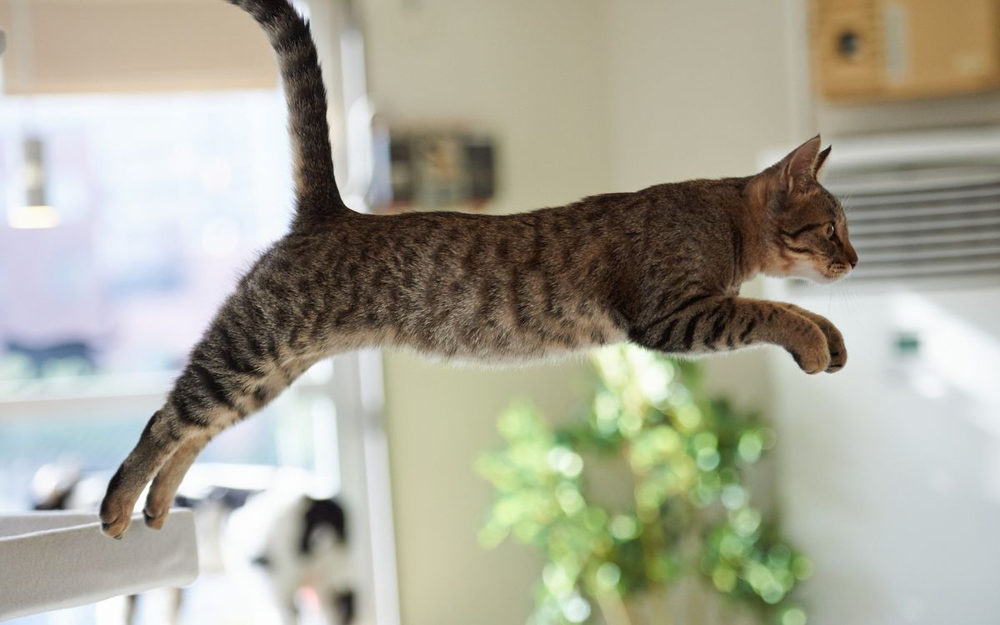

Немного о котах и кошках
Мир делится на любителей собак и любителей кошек.
Котов можно обожать за то, что они умилительны и отлично смотрятся в Инстаграме.
Но на этом не кончаются причины, почему вам стоит завести кота или кошку.
Мы собрали самые интересные факты, после которых вам точно будет не хватать пушистого мурлыкающего друга.
- Среди владельцев котов на 17% больше людей с ученой степенью.
- Кошки не чувствуют сладкого вкуса.
- Мозг кошки похож на человеческий. За эмоции у кошек отвечают те же самые участки, что и у людей.
- Кошки трутся об людей, чтобы пометить их как свою территорию.
- В основном, кошки имеют более низкий социальный IQ, чем собаки, но могут решать более сложные когнитивные
задачи, когда им это интересно.
- У кошек часто бывает непереносимость лактозы, поэтому перестаньте им давать молоко
- В мультиках врут: котов лучше не кормить сырой рыбой.
- Исааку Ньютону приписывают изобретение кошачьей двери.
- Мурчание кошки может быть способом самоизлечения, и в то же время знаком нервозности, а также
удовлетворенности.
- Кошки спят около 70% своей жизни.
- Кошки производят около 100 различных звуков. Собаки — лишь 10.
- Длина самого крупного кота — 1,2319 метра.
- Кошки могут изменить свое «мяу», чтобы манипулировать человеком. Они имитируют голос ребёнка, когда
нуждаются в пище, например.
- У кошек более 20 мышц отвечают за движение ушей.
- Сейчас в мире живет свыше 500 миллионов домашних кошек. Самая «кошачья» страна — это Австралия: на 10
человек приходится 9 кошек.
- Самое старое видео с кошками, размещенное на YouTube, было снято в 1894 году.
- Кошка по имени Дасти установила рекорд по численности потомства. За свою жизнь она родила 420 котят.
- У взрослых кошек 30 зубов. У котят — 26 временных, которые выпадают к 6 месяцам.
- Авраам Линкольн держал в Белом доме четырех котов.
- В оригинальной итальянской версии «Золушки» добрая крестная фея была кошкой.
- В Шотландии есть памятная башня в честь кота по имени Таузер, который поймал за свою жизнь почти 30 тысяч
мышей.
- В средние века кошки ассоциировались с чёрной магией, и в День Святого Иоанна люди по всей Европе сжигали
их на кострах.
- Во многих частях Европы и Северной Америки черная кошка считается плохим знаком, а в Великобритании и
Австралии обозначает удачу.
- Поверхность носа у кошек так же уникальна, как отпечатки пальцев у людей.
- Если кошка оставляет свои испражнения непокрытыми, то это признак агрессии, чтобы вы знали: она не боится
вас.
- Обычно у кошки пять пальцев на её передних лапах и четыре на задних, если только она не многопальцевая.
- Многопальцевые кошки иногда называются «кошками Хемингуэя» из-за того, что автор очень сильно любил их.
- Кошки вылизывают себя, чтобы перестать пахнуть человеком.
- Кошки используют свои вибриссы, чтобы выяснить, могут ли они протиснуться или нет.
- Кошки потеют только через свои подушечки лап.
- Кошки узнают ваш голос, но предпочитают его игнорировать.
- Кошка не может вскарабкаться на дерево вниз головой из-за устройства когтей. Для того, чтобы спуститься с
дерева, ей нужно отступать, пятясь задом.
- Зрение кошки одновременно лучше и хуже человеческого. Кошки отлично видят в темноте, но не различают
цвета.
- Кошки способны преодолевать огромные расстояния, чтобы добраться до дома.
- В наибольшем известном помете было 19 котят, из которых 15 выжили.
- Египтяне так и называли кошек — мау.
- В мире существуют кошки, которые пережили падение с высоты 230 метров.
Больше о котах и
кошечках
Смешные видео с котами
Написать мне в телеграм
Хороший справочник по тегам HTML
тел:
+380992797690
e-mail:
shytovnikita@gmail.com